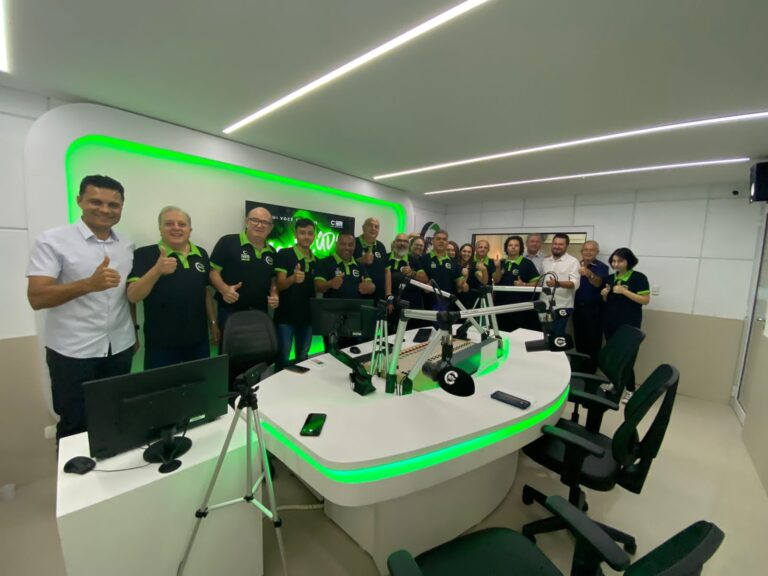

Tocando agora em 92,7 FM
Show da Tarde
com Jeferson Luis "Black"
Desde 1978 · Medianeira – PR
Há mais de 45 anos levando informação, música e companhia para Medianeira e toda a Região Oeste do Paraná.
Tocando agora em 92,7 FM
com Jeferson Luis "Black"
O Começo
A história da Rádio Independência começou em 4 de dezembro de 1978. Depois de muito esforço, dedicação e trabalho, o sonho se tornou realidade: entrava no ar, em Medianeira, a Rádio Independência AM 1580 kHz, com Irineo Pelissari como diretor e sócio-proprietário.
Em pouco tempo, a programação se expandiu de Medianeira para toda a Região Oeste Paranaense, com informação, música e prestação de serviço para quem ouve.
Linha do tempo
4 de dezembro de 1978
Entra no ar na AM 1580 kHz, em Medianeira, sob a direção de Irineo Pelissari.
12 de janeiro de 2000
Moacir José Hanzen assume a emissora, já em 1020 kHz, e adota o slogan que ela leva até hoje.

4 de dezembro de 2021
A Independência migra para o 92,7 FM e, aos 43 anos, inaugura um estúdio novo e desliga o transmissor AM.
Informação, música e companhia
Jornalismo, entretenimento e prestação de serviço para Medianeira e região.
Homenagem
(Em memória)
Em 12 de janeiro de 2000, Moacir José Hanzen assumiu a Rádio Independência, já em 1020 kHz, e adotou o slogan "A Rádio da Família", que a emissora carrega até hoje. Criou a Rede Costa Oeste de Comunicação, seu grande sonho, e levou a Independência ao 92,7 FM em 2021.
Galeria
Quem conduz a rádio

Diretora Geral

Gerente Geral
Sintonize 92,7 FM em Medianeira e região ou ouça ao vivo pela internet.